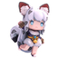
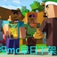
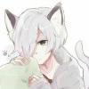

附录
图鉴

反MC的曦曦解说
项目编号:MNG-01
类别：狗科-迷你狗
项目等级：A
特殊收容措施：联系B站客服，尽快封禁
描述：该项目会散布“MC抄袭迷你”的谣言，令倾听者出现头晕、恶心等症状，甚至死亡。该项目很擅长侮辱主播，侮辱最多的是籽岷。喜欢把狗命名为“MC狗”并杀死。
这就是MC的狗没错啊？好像是狼……不知道有没有被驯服

迷你党左派
项目编号:MNG-02
类别：狗科-迷你狗
项目等级：B
特殊收容措施：联系B站客服，尽快封禁
描述：该项目特爱鬼畜，喜欢鬼畜睿智君弹皮筋和小咛咛绘画屋，可令观看者永久失明护眼！！！。

JK_Stain
项目编号:鐨勪笁涓湴鏂归殢椋庨鑸�
类别：绾风悍椋庣數鍦烘槸澶уけ鎵�鏈涘ぇ宸ㄥ寲鑲′唤
人员等级：A
描述：该项目是反迷你世界群的沙雕管理，参与各种行动，但多半以失败告终。
以下是JK_Stain
萨比博士与囚犯
反MC的曦曦解说的对话
JK_Stain：为什么反MC？
反MC的曦曦解说：MC垃圾！MC抄袭��！��世界万岁！我的世界万�！
JK_Stain：。。。MC并没有抄袭��，网上都说了，MC是2009的，��是2015的。
反MC的曦曦解说：��世界大清朝就有了！是古��在清朝写的代码，后来传给了儿子��兴！
JK_Stain：在那个时候诺基亚都没有你他�的拿什么玩？��狗，个个编故事能力极强，都是祖国的食人花！
反MC的曦曦解说：我不管我不管！MC就是抄袭了��！
JK_Stain：。。。处决了吧，小学生。。。
以上是反MC的曦曦解说被处决前与JK_Stain博士的对话。
拘捕MNG-02
C级人员Get.清晨参加拘捕行动。
Get.清晨：����博士，一切准备就绪。
����博士：允许拘捕。
Get.清晨进入了MNG-02的家。Get.清晨发现MNG-02正在制作辱骂籽岷的视频。
Get.清晨：不许动！举起手来！
MNG-02举起了手，但仍然诡异地笑着。
MNG-02：呵呵，你们MC抄袭迷你还有理了？迷你是1999年古浩阳制作的，却被一个叫骂哭死的智�瑞典人从网络黑到了代码，直接复制粘贴就得到了MC。后来古浩阳的儿子发现了，才发布了迷你世界。MC狗逼们，你们不知道古浩阳制作代码有多辛苦，只会复制粘贴！
����博士：【无语的表情】别理它说的话了，拘捕它！它只会胡言乱语。
MNG-02：你们MC狗急了！急了！哈哈哈，就算你们拘捕了我，反MC联合国、����解说-反MC还有更多的迷你玩家会反MC！MC智障们，你们滚！
Get.清晨：Fxxk!你们迷你就几亿人，我们全球MC大军有10亿多人！Fxxk!Fxxk!F������������������【信号中断】
����博士：在？喂？卧槽？你��������������
Get.清晨在拘捕行动中失联，至今未重新联系。